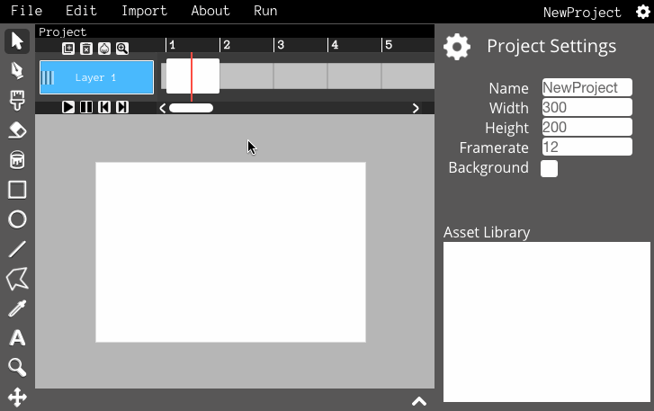
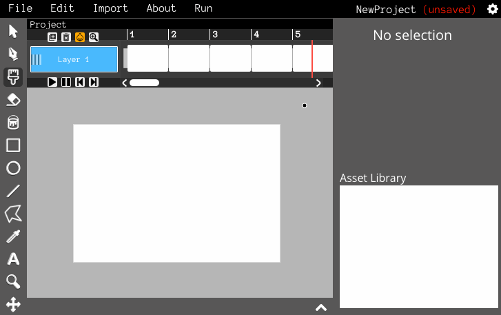
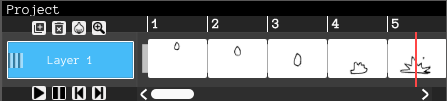
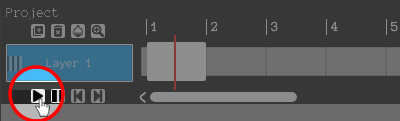
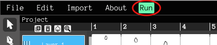
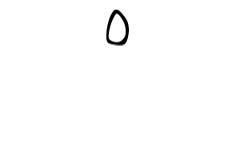

In this tutorial, you will learn how to make simple frame-by-frame animations!
Let's get started by creating a few blank frames to draw in. If you hover your mouse over an empty space on the timeline, an icon will appear showing that you can create a new frame. Click this icon and a new frame will appear!
Do this until you have a few frames. Now click on the first one. This is where you'll draw the first frame of your animation.
Now just do the same for the rest of the empty frames to finish your animation.
You can press play button on the timeline to play your animation.
Before you export your animation, you can click the "Run" button to see a preview of what it will look like.
To export your animation as an animated GIF, click the "File" menu and select "Export Animated GIF".
You can change your projects framerate to make it play faster or slower.
Try using Onion Skinning while drawing your animation. Onion Skinning lets you see what the previous frame looks like so you can make your animation look smoother.